GIS Expert • Data Analyst • Marine Conservationist
Leveraging spatial data and analytics to drive sustainable development and marine conservation in coastal communities.
A GIS & Data Analyst with expertise in spatial data analysis, SQL, and data visualization. My experience cuts across marine conservation, fisheries management, and sustainable development. I have worked with diverse stakeholders including government agencies, NGOs, and fishing communities to integrate data-driven insights for decision-making. My passion lies in leveraging GIS and data analytics to enhance livelihoods in coastal communities and promote environmental sustainability.
By deploying custom analytics dashboards alongside elite technical capacity building in open-source tools, I equip conservationists, enterprises, and NGOs with the infrastructure and expertise required to scale sustainable environmental impact.
Benthic habitat classification, forest cover tracking, resource mapping, and custom bathymetric modeling to serve as baseline spatial data infrastructure.
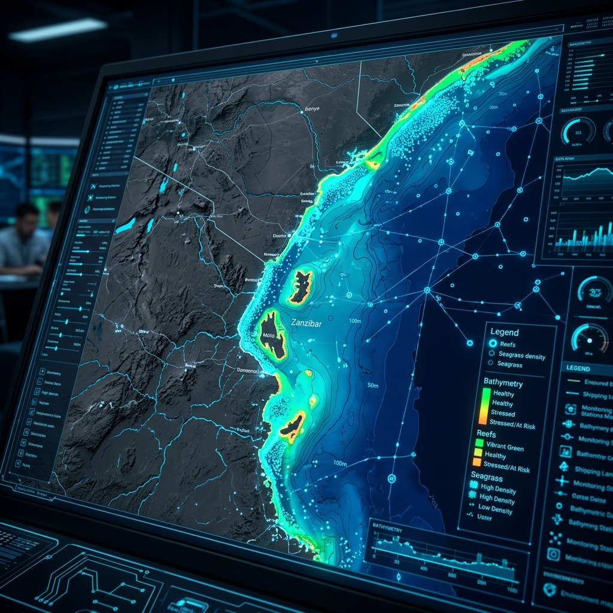
Transforming raw environmental and temporal data into donor-ready reporting dashboards, custom time-series analytics, and automated report generators.
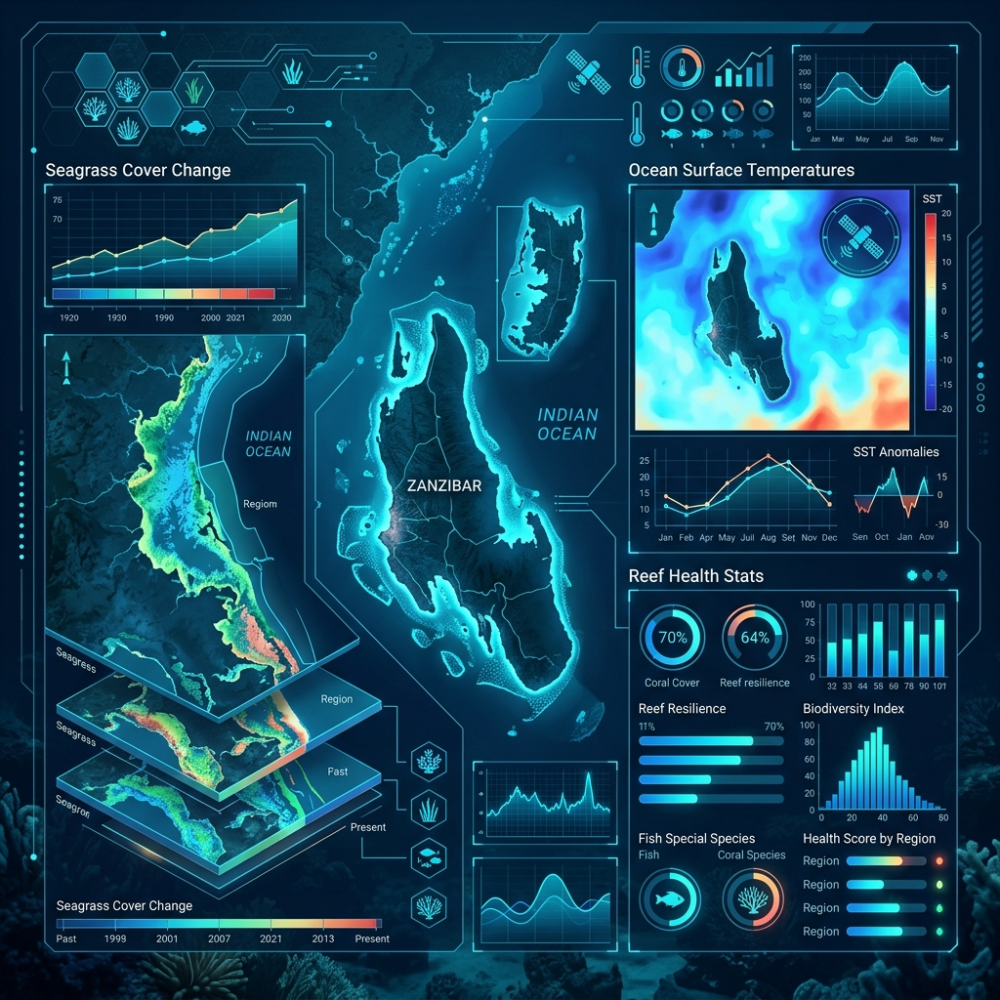
Low-code mobile forms tailored for offline remote operations, patrol track logging, fisheries catch registers, and socio-economic baseline surveys.
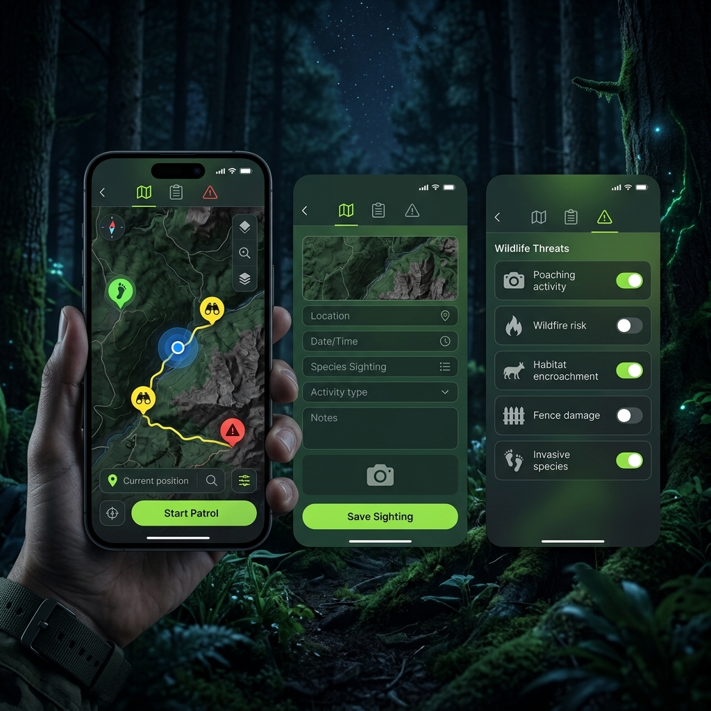
Deploying precision agriculture indices alongside robust MEAL frameworks to monitor crop yields, predict weather hazards, and report metrics to verifiers.
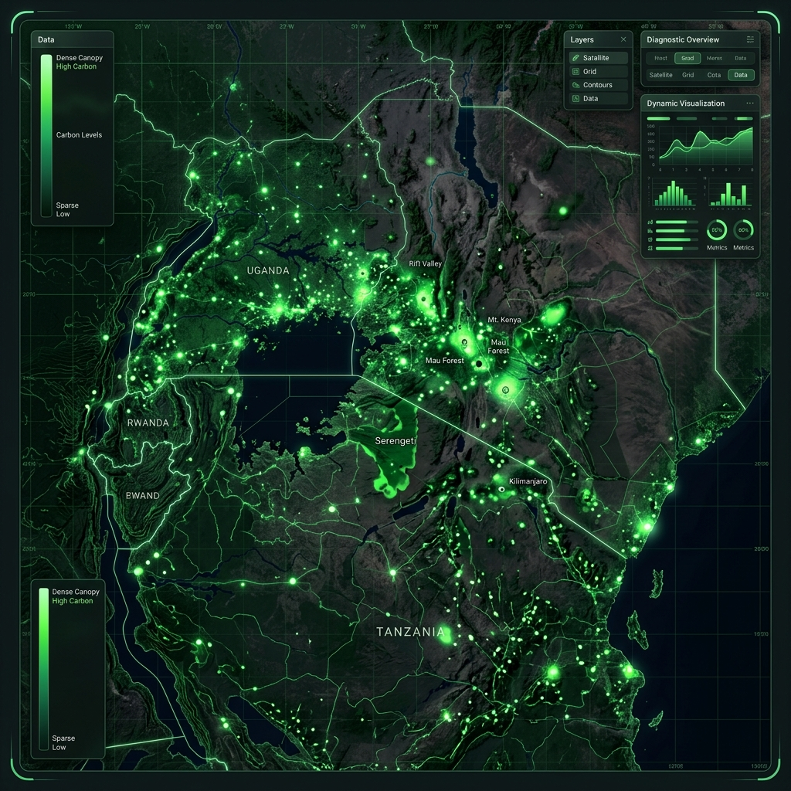
Select an indicator module below to simulate our custom data pipelines, crop-suitability models, and environmental monitoring dashboards.
A selection of spatial analysis, conservation monitoring, and data science projects delivered across East African marine and terrestrial ecosystems.
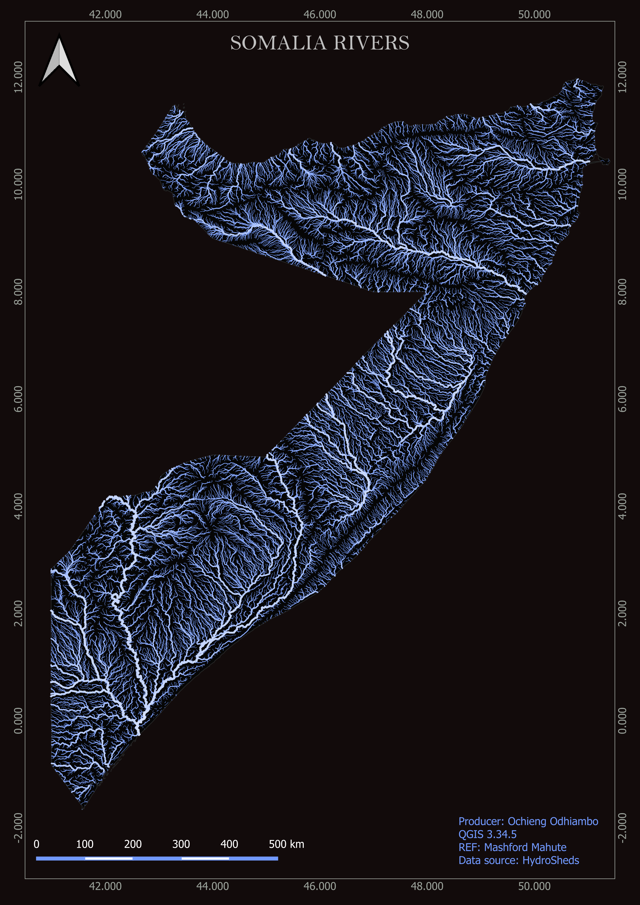
Spatial analysis of hydrological features in Somalia for water resource management and infrastructure planning.
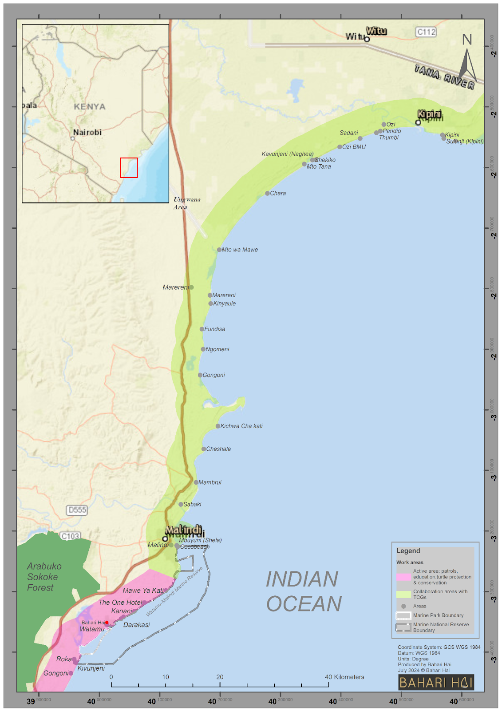
Monitoring of bottom trawler operations and illegal fishing (IUU) areas in Ungwana Bay marine ecosystem.
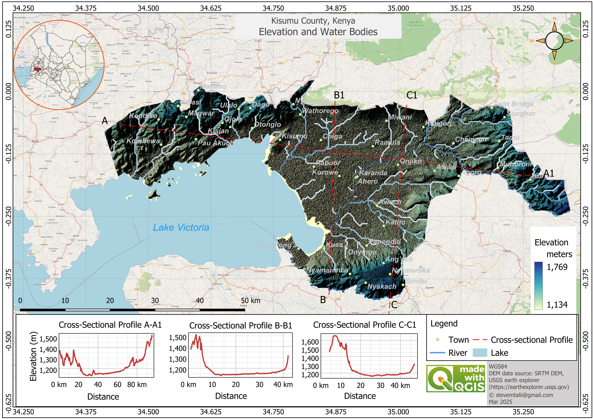
Digital Elevation Model analysis for water, sanitation, and urban planning infrastructure in Kisumu.
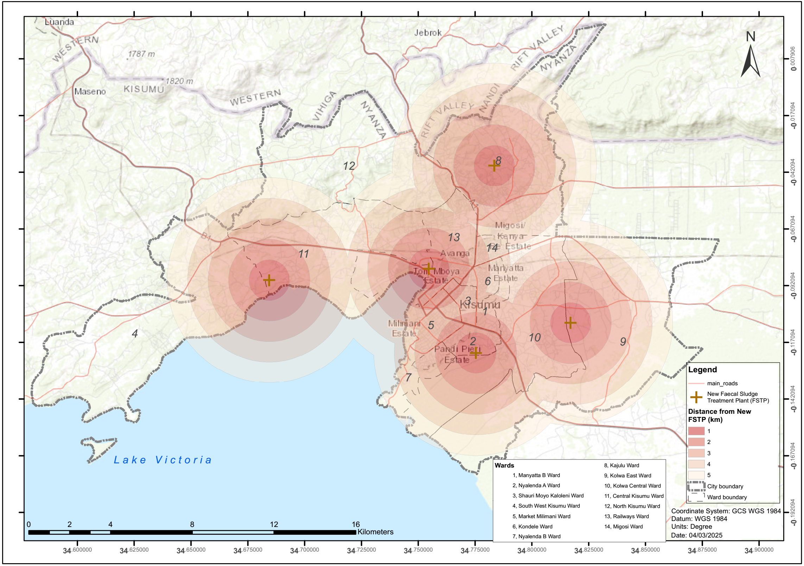
Impact radius analysis for fecal sludge treatment plant location selection in western Kenya.
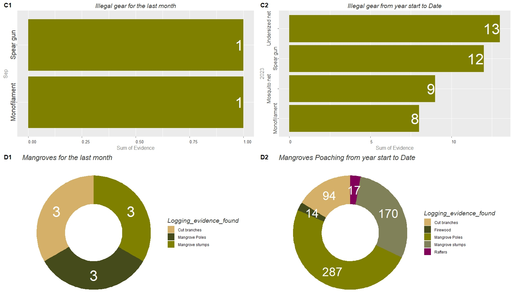
Mobile tool-based tracking of illegal mangrove logging incidences to assess impact on coastal resources.
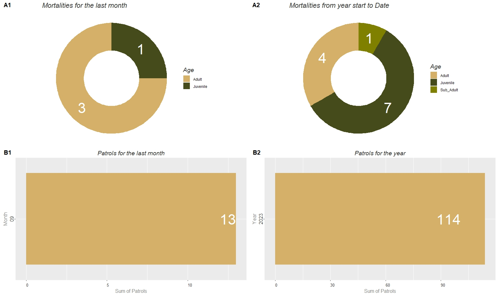
Illegal take assessment and monitoring system supporting marine resource management in coastal Kenya.
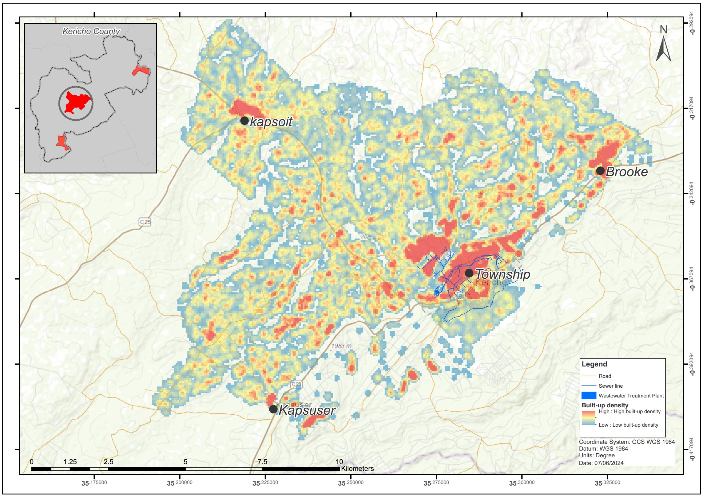
Population density and sewer facility need analysis for identifying service delivery priorities.
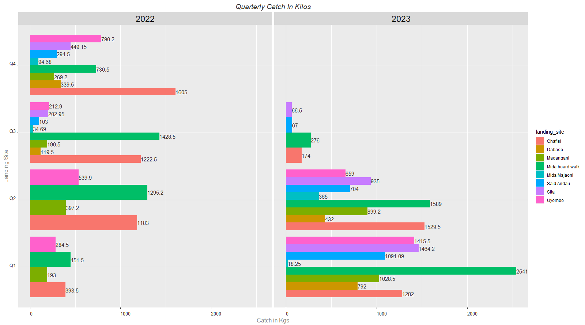
Artisanal fishing data analysis supporting Beach Management Unit establishment and fisheries governance.
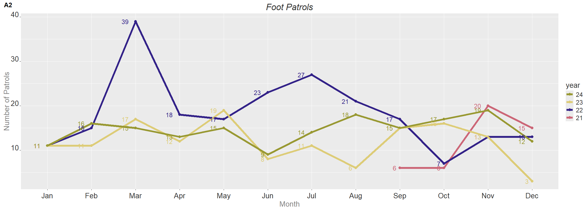
Tracking patrol activities to optimize resource management in Watamu Marine Protected Area.
Whether you're a government agency, conservation organization, or social enterprise, I can help you leverage spatial data and analytics to achieve your environmental and development goals.